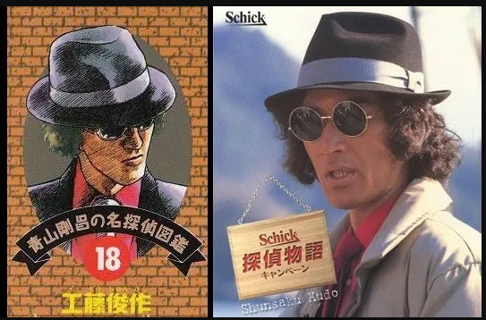

我是从99年开始看柯南、被M26炸出来的老柯哀 。
。
在看了诸位同好的分析之后，认识到作者在所有新兰糖中都埋了或大或小的雷。
这里也因为受到许多启发，试着从一个貌似之前没有人入手的角度，分析一下单行本“青山刚昌的名侦探图鉴”这个环节在新兰关键情节的那一卷里作者设下的巧思。
。在看了诸位同好的分析之后，认识到作者在所有新兰糖中都埋了或大或小的雷。
这里也因为受到许多启发，试着从一个貌似之前没有人入手的角度，分析一下单行本“青山刚昌的名侦探图鉴”这个环节在新兰关键情节的那一卷里作者设下的巧思。
首先就是大家已经说过太多次的、小哀出场的第十八卷。
也是本帖发现的核心理论：关键剧情的单行本，位于封三的“青山刚昌的名侦探图鉴”中的人物是作者的刻意安排，有他的巧思。
钥匙孔人物灰原哀，名侦探图鉴是 工藤 俊作。
工藤俊作这个人物的经典程度、影响力和世界范围内的知名度完全进不了 侦探TOP20,。
更何况之后的几卷名侦探图鉴有着硬汉侦探的始祖人物之一山姆·史培德，安乐椅侦探马普尔小姐，古畑任三郎，哲瑞雷恩，汉尼拔等等如雷贯耳的响亮名字。
所以这里把工藤俊作安排在这里完全是作者自己的个人喜好。
或者说故意与本卷核心人物灰原哀作对应。
也是本帖发现的核心理论：关键剧情的单行本，位于封三的“青山刚昌的名侦探图鉴”中的人物是作者的刻意安排，有他的巧思。
钥匙孔人物灰原哀，名侦探图鉴是 工藤 俊作。
工藤俊作这个人物的经典程度、影响力和世界范围内的知名度完全进不了 侦探TOP20,。
更何况之后的几卷名侦探图鉴有着硬汉侦探的始祖人物之一山姆·史培德，安乐椅侦探马普尔小姐，古畑任三郎，哲瑞雷恩，汉尼拔等等如雷贯耳的响亮名字。
所以这里把工藤俊作安排在这里完全是作者自己的个人喜好。
或者说故意与本卷核心人物灰原哀作对应。

2024-03-07 11:15 | waighty:这么看73人物素描底子真不错…2024-03-07 19:28 | 甜瓜超人663:回复 waighty :科班出身的2024-03-08 08:21 | 贴吧用户_GGXM4yS:回复 waighty :他画的卷福真的像2024-03-10 21:31 | ☞坚硬如水☜:回复 waighty :这时候还不是最好的时候就已经这么强啦2024-03-31 10:28 | 林夕劫掠队长💕:这哥看着咋这么像小时候看的铠甲勇士里的一个反派嘞
第二十六卷 危命复活篇
可以说是目前新兰感情最融洽的一次相处。
这一次的名侦探图鉴人物拥有“鲨鱼”的外号。
如果说这也是故意安排的话，那么“双鲨论”的伏笔可能作者最早在这里就埋下了。
不过，也许因为新兰此时情谊正浓，这里的暗示也不算太明显。
可以说是目前新兰感情最融洽的一次相处。
这一次的名侦探图鉴人物拥有“鲨鱼”的外号。
如果说这也是故意安排的话，那么“双鲨论”的伏笔可能作者最早在这里就埋下了。
不过，也许因为新兰此时情谊正浓，这里的暗示也不算太明显。
2024-03-07 08:20 | 即将02的废物月:在新弗尼号案的时候可能已经开始描写鲨鱼和海豚了，不过当时是给小兰海豚意向，然后服部和柯南全都表示对海豚没兴趣，而且提到“侦探们会物以类聚”2024-03-12 01:56 | ☞坚硬如水☜:回复 即将02的废物月 :确实
第62卷，死罗神篇。
名侦探图鉴是汤川学。
帝都大学理工系物理学科的准教授。与其说是侦探不如说是有关部门请来的科学顾问。
设定为 高个子，头脑聪明的科学家。
再看作者画的画像，茶色短发，眼镜，白大褂。
综合起来，你想到了谁？ 另外，白大褂里是柯南标志性的蓝色衣服。而某人的白大褂里穿的是红色。
你中有我，我中有你。
名侦探图鉴是汤川学。
帝都大学理工系物理学科的准教授。与其说是侦探不如说是有关部门请来的科学顾问。
设定为 高个子，头脑聪明的科学家。
再看作者画的画像，茶色短发，眼镜，白大褂。
综合起来，你想到了谁？ 另外，白大褂里是柯南标志性的蓝色衣服。而某人的白大褂里穿的是红色。
你中有我，我中有你。
2024-03-08 22:35 | 贤家的鱼苗儿♀:哀酱18卷钥匙孔里面也是白大褂配蓝色衣服2024-03-09 09:44 | ☞坚硬如水☜:回复 贤家的鱼苗儿♀ :还真的！还得是集体智慧！2024-03-12 08:30 | 柒玖狐狸:小哀钥匙孔是蓝+白，卷底工藤侦探是红+黑，名柯里工藤父子姓和优作的名就来自他2024-03-27 01:29 | ☞坚硬如水☜:回复 柒玖狐狸 :好啊👌

前排
第71卷，伦敦篇·福尔摩斯默示录。
名侦探图鉴是美剧《豪斯医生》里的男主角。
恰巧我是这个剧的剧迷，可以说正好撞在了我的枪口上。
主角有一句口头禅，或者是人生信条：“Everybody lies.” 人人都撒谎，作者也在人物小传里提到了这句话。
我们是否可以理解成：
1. 作者在撒谎。表面上写的新兰，其实是柯哀。
2. 人物关系是谎言。新兰并不能长久。
3. 之后新一说的，并且自己也承认的：推理不出喜欢女孩的心思。这句话是谎言。
另外，由于是电视剧，作者推荐的一集是《Frozen》。
这集是第4季第11集。代表柯哀的两个数字全占齐了！
不过，整个豪斯医生剧集，公认的最好看，最有深度的是第一季最后一集和第二季最后一集。
尤其是第二季最后一集，可以达到严肃文学的高度，内涵超越了电视剧这种大众娱乐形式。
而作者却推荐《Frozen》这集，我想并不只是因为它和两个数字有关。
首先，这集的背景设置在冰天雪地的南极，豪斯医生是用视频会诊的方式和南极的病人沟通。
其次，从一开始就使用了一个障眼法，让观众误认为被螺旋桨割伤腿部的路人男是核心病人，而真正需要男主角开动脑筋治疗的是给这个路人男治病的、南极科考队里的随队女医生。
然后，这个女医生自信，强大，专业，聪明，从智商和气场上完全拿捏不可一世、恃才傲物的男主角豪斯医生，甚至看穿了豪斯的愤世嫉俗，短短几天的视频会诊却像老朋友一样了解对方，这很像柯哀相处的模式。
最后，男主角豪斯在为其治病的过程中被女方深深吸引。可以说是全剧破天荒的第一次。
青山刚昌真正推荐的意图就在于此，不用多说。
名侦探图鉴是美剧《豪斯医生》里的男主角。
恰巧我是这个剧的剧迷，可以说正好撞在了我的枪口上。
主角有一句口头禅，或者是人生信条：“Everybody lies.” 人人都撒谎，作者也在人物小传里提到了这句话。
我们是否可以理解成：
1. 作者在撒谎。表面上写的新兰，其实是柯哀。
2. 人物关系是谎言。新兰并不能长久。
3. 之后新一说的，并且自己也承认的：推理不出喜欢女孩的心思。这句话是谎言。
另外，由于是电视剧，作者推荐的一集是《Frozen》。
这集是第4季第11集。代表柯哀的两个数字全占齐了！
不过，整个豪斯医生剧集，公认的最好看，最有深度的是第一季最后一集和第二季最后一集。
尤其是第二季最后一集，可以达到严肃文学的高度，内涵超越了电视剧这种大众娱乐形式。
而作者却推荐《Frozen》这集，我想并不只是因为它和两个数字有关。
首先，这集的背景设置在冰天雪地的南极，豪斯医生是用视频会诊的方式和南极的病人沟通。
其次，从一开始就使用了一个障眼法，让观众误认为被螺旋桨割伤腿部的路人男是核心病人，而真正需要男主角开动脑筋治疗的是给这个路人男治病的、南极科考队里的随队女医生。
然后，这个女医生自信，强大，专业，聪明，从智商和气场上完全拿捏不可一世、恃才傲物的男主角豪斯医生，甚至看穿了豪斯的愤世嫉俗，短短几天的视频会诊却像老朋友一样了解对方，这很像柯哀相处的模式。
最后，男主角豪斯在为其治病的过程中被女方深深吸引。可以说是全剧破天荒的第一次。
青山刚昌真正推荐的意图就在于此，不用多说。
2024-03-07 09:41 | ☞坚硬如水☜:对了 忘说一点 这集一开始第一个画面就是下雪2024-03-07 11:19 | 末寒▫:同为House剧迷，豪斯医生在锁孔里已经是惊喜本身，然后一下子理解青山欣赏哪种拉扯。不过想想这也是青山眼里的福尔摩斯艾琳关系，他又确认了一遍。当时看豪斯下意识地关心她好不好，我和Foreman一样，顿了一下。之前不知道这个锁孔，感谢分享。2024-03-08 01:45 | 世界上没有真理:回复 末寒▫ :這種隱晦拉扯應該是有中青山的xp，以及青山他很喜歡東野圭吾的秘密，也能看出他愛的是哪種拉扯，所以新蘭這種畫的太直白的絕對是煙霧彈2024-04-10 12:24 | ☞坚硬如水☜:回复 末寒▫ :嘻嘻😁

第72卷，伦敦解决篇。
名侦探图鉴是日本作家横山秀夫笔下的侦探仓石义男。
青山冈昌在人物小传里提到了这个人物的两句名言：
“把能收集起来的东西全部收好” “你和我说的不一样”。
这是否是在暗示，作者真正想写的不一定是读者表面上看到的，而需要把各种线索综合起来判断？
另外，青山推荐的相关作品是《赤い名刺》红色名片。
这里值得讨论一下，因为横山秀夫公认的名篇，也是他获得各种大奖的名篇是《阴之季节》和《动机》两部。
个人大胆推论，红色名片就是red card，也是足球里的红牌！
结合伦敦篇的体育背景来看，MISS GLASS是获胜者，那么她的对手被红牌罚下场了！
名侦探图鉴是日本作家横山秀夫笔下的侦探仓石义男。
青山冈昌在人物小传里提到了这个人物的两句名言：
“把能收集起来的东西全部收好” “你和我说的不一样”。
这是否是在暗示，作者真正想写的不一定是读者表面上看到的，而需要把各种线索综合起来判断？
另外，青山推荐的相关作品是《赤い名刺》红色名片。
这里值得讨论一下，因为横山秀夫公认的名篇，也是他获得各种大奖的名篇是《阴之季节》和《动机》两部。
个人大胆推论，红色名片就是red card，也是足球里的红牌！
结合伦敦篇的体育背景来看，MISS GLASS是获胜者，那么她的对手被红牌罚下场了！
第87卷，新兰幼儿园初遇。
这里我在别的分析帖子里提到过，介绍的侦探与“四”有解不开的缘分，小说名更是“恶魔”。
而且青山画的这个肖像，一脸清冷、傲气、超然物外，浅色头发，长眼。你想到了谁呢？
这里我在别的分析帖子里提到过，介绍的侦探与“四”有解不开的缘分，小说名更是“恶魔”。
而且青山画的这个肖像，一脸清冷、傲气、超然物外，浅色头发，长眼。你想到了谁呢？
第95卷，红修篇。所谓世纪之吻出现在这一卷。
名侦探图鉴这个环节不用我多说，大家自己看。
可以说“强行”提到了灰原哀 。
。
名侦探图鉴这个环节不用我多说，大家自己看。
可以说“强行”提到了灰原哀
。
另外，我还想到几个比较牵强的联系。这里也一起放过来，抛砖引玉。
第21卷，工藤新一飞机上的第一案。
新兰出现的故事，作者介绍的侦探外号“恶魔”……
另外，推荐的作品叫《马耳他黑鹰》。
值得一提的是，新一第一案里，飞机上的嫌疑人全都取的和鸟有关系的名字，甚至出现了大BOSS的热门人选爱德华克洛（crow 乌鸦）。
那么，作者这里再次提到鹰，是不是让我们注意这个案子呢？
第21卷，工藤新一飞机上的第一案。
新兰出现的故事，作者介绍的侦探外号“恶魔”……
另外，推荐的作品叫《马耳他黑鹰》。
值得一提的是，新一第一案里，飞机上的嫌疑人全都取的和鸟有关系的名字，甚至出现了大BOSS的热门人选爱德华克洛（crow 乌鸦）。
那么，作者这里再次提到鹰，是不是让我们注意这个案子呢？
2024-03-17 20:33 | pingerlacus:这样看纽约的开始后续小兰喜欢新一和幼儿园的开始后续新一喜欢小兰都跟恶魔有关啊！
牵强联系之二：
第31卷，网中迷。小哀鲨鱼海豚论的一卷。
包含小哀海边与小兰握手的名场面。
名侦探图鉴这个环节，作者提到一句樱吹雪。
不知道此时是不是已经给 樱雪论 柯哀初遇打好草稿了。
第31卷，网中迷。小哀鲨鱼海豚论的一卷。
包含小哀海边与小兰握手的名场面。
名侦探图鉴这个环节，作者提到一句樱吹雪。
不知道此时是不是已经给 樱雪论 柯哀初遇打好草稿了。
这么细吗老贼，这个部分都是老贼自己选取的，也就是刻意为之了。
牵强联系之三：
第84卷 水族馆篇。
侦探图鉴是萨兰德，出自「龙纹身的女孩」。
又酷又飒的女侦探。
侦探是鲨鱼，女侦探是另一只鲨鱼。
第84卷 水族馆篇。
侦探图鉴是萨兰德，出自「龙纹身的女孩」。
又酷又飒的女侦探。
侦探是鲨鱼，女侦探是另一只鲨鱼。
本帖到此结束。
最后再说一个有意思的。
故事中反复提到的太阳月亮星星暗号出自第12卷。
而这一卷的名侦探图鉴人物正是灰原哀 哀字的来源，女侦探V·I·渥许斯基。
作者这里不知道是什么意图。不过，小哀以另一种方式参与了此案。
最后再说一个有意思的。
故事中反复提到的太阳月亮星星暗号出自第12卷。
而这一卷的名侦探图鉴人物正是灰原哀 哀字的来源，女侦探V·I·渥许斯基。
作者这里不知道是什么意图。不过，小哀以另一种方式参与了此案。
2024-03-07 09:49 | ☞坚硬如水☜:或者我认为这个案子在做着原本的设计里是有灰原哀登场的 甚至还扮演了很重要的角色2024-03-08 01:01 | 熙xixxi:动画组的问题导致哀出场推迟很久，三小只又是为了哀创造出来的角色，所以原本这个事件要有哀参与的？2024-03-08 08:34 | 婆罗洲老斑鸠:个人感觉这个i太刻意，蔻蒂莉亚格雷gray还算有名有姓，这位国内甚至都没引进过相关作品。2024-03-08 08:35 | 熙熙兔:V.I.渥许斯基介绍里是会空手道的。表面上哀是来源于渥许斯基，实际上来自于艾琳艾德勒，所以我的想法是会空手道的渥许斯基给艾琳·艾德勒做掩护/伪装。2024-03-08 08:35 | 婆罗洲老斑鸠:而且蔻蒂莉亚人物形象与灰原有共同点，情节上也有致敬。这位我大概搜过一下，除了性别没看出什么相似。2024-03-08 08:36 | 婆罗洲老斑鸠:回复 熙熙兔 :我也觉得2024-03-08 10:31 | zxay6🌱:回复 熙熙兔 :会空手道、父亲是殉职刑警、自己曾从事过律师工作，指向性非常明显了

又是一扇新世纪的大门
很好的知识拓展，让我的大脑旋转！
好细…
 目前看来我也觉得作者暗示是柯哀，但是实际上是在说灰原哀喜欢的是小兰，太多直接显示了
目前看来我也觉得作者暗示是柯哀，但是实际上是在说灰原哀喜欢的是小兰，太多直接显示了在作者不更新的无聊日子里文吧就是我的精神食粮
太细了
cy，支持lz
来来来，仪器分析
难道老贼真的是天才？！
刚发现。27卷朱蒂老师登场这一卷，名侦探图鉴人物是007。当年就在暗示她是外国特工了，不知道有多少人看懂了呢？
老贼的心思还真多
第二十四卷，柯南放任大火将皮斯科烧死，正好对应侦探图鉴里“为了正义会采取违法手段”这一句。
2024-03-31 09:01 | 贴吧用户_0bDS2EM:不能完全算放任，是这傻子自己不逃，我也没办法的
细节狂魔